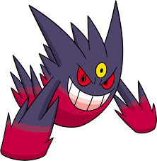

GENGAR KARAI
Gengar é um Pokémon do tipo Fantasma/Venenoso introduzido na Geração I. É a forma evoluida de Haunter.

Origem do nome
Seu nome pode ser relacionado a palavra genghoolie que significa Lúgubre.
Filosofia
A cor de Gengar é roxa. Tem orelhas triangulares, tem olhos pretos e seu globo ocular é vermelho e geralmente é sempre visto com um sorriso. Tem duas mãos com três dedos em cada e também tem três dedos em cada pé e possui uma cauda.
Megaevolução
| Cadeia Mega Evolutiva de Gengar | ||
|---|---|---|
|
| Gengarite => |  |